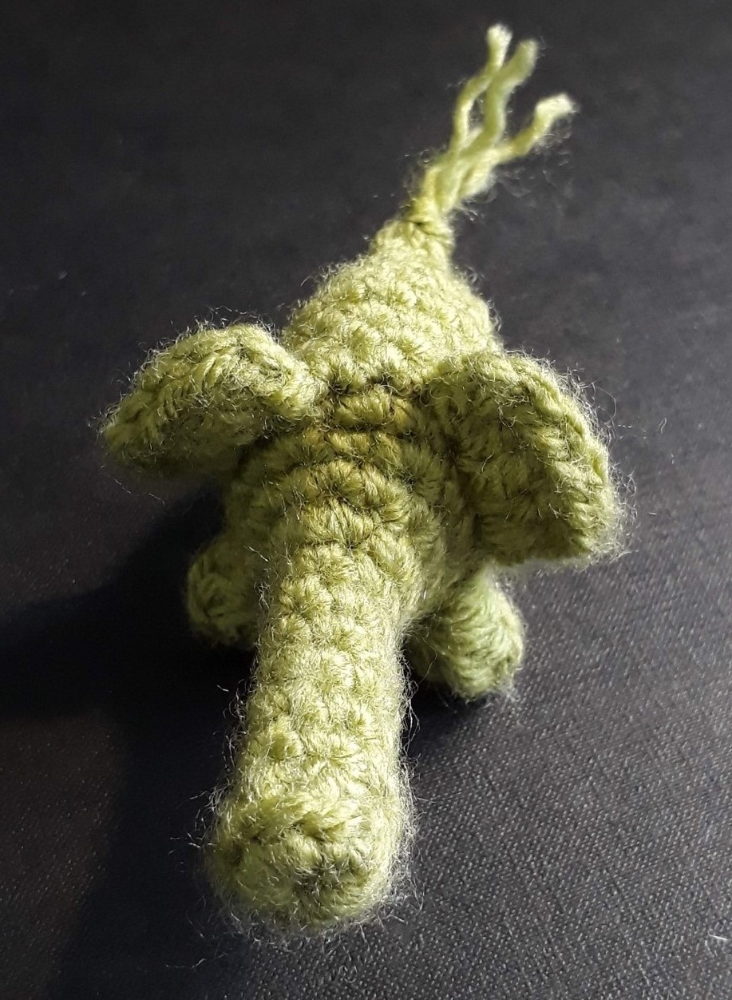

How I made the Elephant
The pattern I followed is available here
First I made a magic ring with single crochet stitches.

I then crocheted in every stitch fo a few rounds to create a linear trunk.

For the feet, I did half double crochets, and slipped into the first one.


I used double crochets for the ears

I then single crocheted in the front loop of 2 stitches to decrease.

I let the yarn poke out for the tail.

